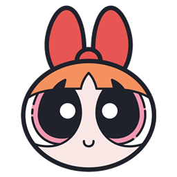

Octopus Prime
Octopus Prime
Connect
NEED A KEY?
--:--
Octopus Prime
CODETRACE
--:--
connecting
+ New task
Refresh
Sign out
!!
Reload
Dismiss
Hello
Loading your board…
–
Open
–
Today
–
Blocked
–
Questions
–
Done
–
Command
–
Today
–
All open
–
Blocked
–
Decide
Command
--:--
Status mix
Load by category
What I look after
Activity
Priority mix
Load by person
Calendar
‹
Today
›
Landing next 14 days
Big things
Systems
3
Today & next 2 days
Later this week
Everything open
Waiting on someone
Decisions waiting on you
Store: GitHub
Last saved —
+
Edit task
Close
Task
Status
Priority
Category
People
Due
Progress %
Waiting on
Open question
Save
Cancel